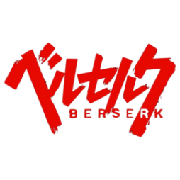
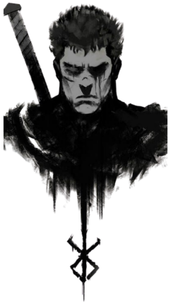

Resumo da Obra

O misterioso Guts, o “Espadachim Negro”, carrega em sua mão mecânica uma enorme espada, e em seu pescoço uma estranha marca que atrai forças demoníacas. Em sua busca por vingança contra um antigo inimigo, nem tudo sai a seu favor, e ele recebe ajuda de uma fantástica criatura.
X